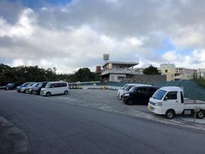
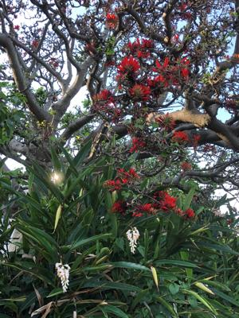

うるがいの話 ある日
最新: かたつむり【うるがいの話 ある日】とは 一日だけのプログです
『うるがいの話』の最新一日だけのプログで、通信料が少なく経済的だ。カニの画像をクリックすると全ての日付が載る『うるがいの話』サイトを表示します
|
|
【うるがいの話】 うるがい(ｳﾙｶﾞｲ urugai)とは、『もずくがに』の名前でとても大きくなります。 |
|---|---|
|
|
【カミマヤーの話】 猫のことを方言でマヤーといいます。カミマヤー（kamimayaa）とは、神の猫のことです。 |
|
【たながぁの音楽】 たながぁ（ﾀﾅｶﾞｰtanagaa）とは手長えびのことで、何種類かあり大きいのは車 エビぐらいになります。 |

|
【ぶながぁの話】 ぶながー(bunagaa)とは、赤い髪の毛、赤い身体、そして身長は１ｍ２０ｃｍ ぐらい、川の蟹を食べているの目撃された。場所は沖縄県国頭郡大宜味村のと ある村僕の隣近所に住んでいる爺さんから、聞いた話です。 |
|
|
【ギーマの話】 ギーマ(giima)とは、山原の里山に咲くスズランに似た、 花を付けます。実は食べられます、 気が付くと口の周りが紫になっています。 |
2022年05月09日 (月）かたつむり
15:57

昨日の夕方、水を撒くとき綺麗にあったヒマワリの芽が、一晩たった朝カタツ
ムリに無残に食べられていた。今日、虫にやられないように鉢に植え替え、虫
がいないベランダへ移そうと思っていたばかりなのに。でも、不思議だよな臭
いでもするのだろうか。ま、諦めず次の作戦をたてるとするかと諦めないこと
にする。そういえば、これは一生出来ないだろうなと言ったところ、『期待は
手放せと言われますが、永久に来ないと思うのは、自分で「受けとりません」
と宣言するようなものです。』と諭された。永久に出来ないだろうなと諦めた
いた『禁じられた遊び』後半を、ギター演奏の仕方を教えてくれるユーチュー
ブ動画を、ほぼ一年ぶりに見直したところ、おや、なんか出来そうと手ごたえ
を感じた。そして、昨日めでたく演奏できた（綺麗な音ではないが）。オーと
感動する。余生の過ごし方（東野圭吾の本によれば、今の私はそう言うことら
しい）は、ギターの演奏が上手くなることを目標とすることに決める。

１５時５２分 ビットコインの総資産 ￥１２、７１８↓